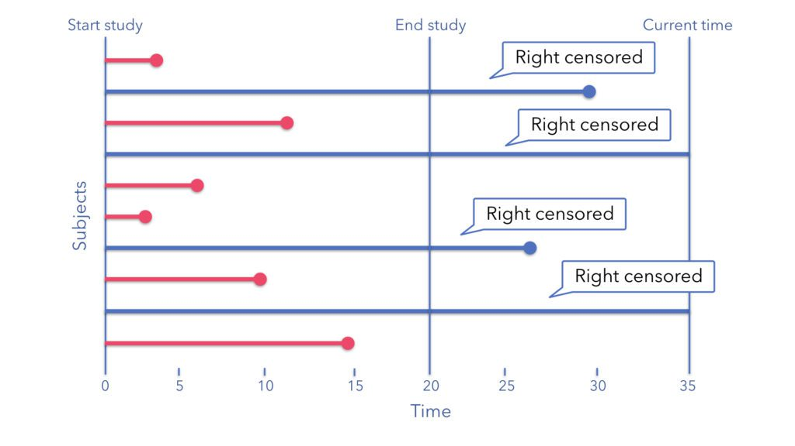
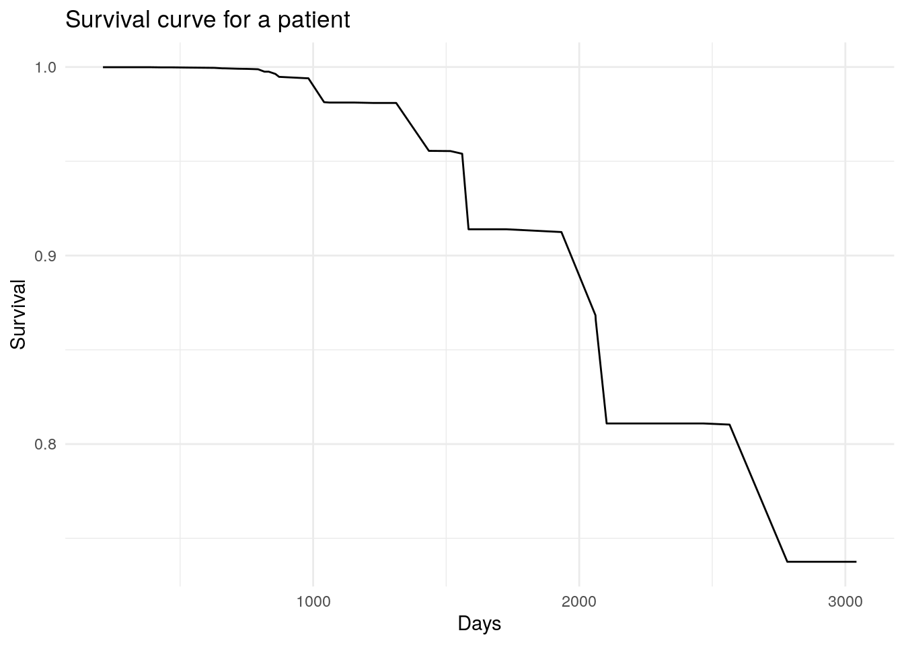

Phân tích sống còn (survival analysis) là phương pháp phân tích mỗi quan hệ giữa cá biến đầu vào với thời gian xảy ra một sự kiện xác định trước. Phương pháp này còn được gọi là phân tích về thời gian xảy ra sự kiện (time to event analysis). Phương pháp phân tích sống còn được áp dụng sớm ở trong lĩnh vực y tế khi đánh giá và phân tích thời gian phát bệnh của bệnh nhân - ví dụ thời gian chuyển sang AIDS của bệnh nhân nhiễm HIV. Tuy nhiên, khi mở rộng sang lĩnh vực phân tích khác, phương pháp này cũng có rất nhiều ứng dụng như:
Phân tích thời gian khách hàng ngưng sử dụng dịch vụ kể từ khi xảy ra 1 sự kiện
Phân tích thời gian nhân viên nghỉ việc kể từ khi onboard
Không giống với các phương pháp khác, phân tích sống còn có cá đặc điểm sau.
Biến phụ thuộc là biến thời gian
Dữ liệu có đặc trưng censor - là sự kiện (event) xảy ra ngoài khoảng thời gian quan sát.
Có hai loại censor:
Right censoring: là trường hợp sự kiện diễn ra sau khoảng thời gian phân tích - hay nói cách khác, sự kiện không diễn ra trong khoảng thời gian quan sát.
Ví dụ, nghiên cứu 100 bệnh nhân HIV trong khoảng thời gian 1 năm. Trong thời gian đó, có 10 bệnh nhân chuyển qua AIDS, 90 bệnh nhân còn lại chưa qua AIDS trong một năm đó nhưng ta đều biết rằng họ sẽ chuyển thành AIDS. Dữ liệu kiểu vậy được gọi là right censoring. Thời gian bệnh nhân chuyển qua giai đoạn AIDS nằm ngoài khoảng thời gian quan sát.

Left censoring: Thời gian diễn ra sự kiện trước khoảng thời gian diễn ra quan sát. Ví dụ, nghiên cứu 100 bệnh nhân nhập viên do nghi ngờ bị lao, 40% dương tính với lao tại thời điểm nhập viện nhưng không biết chính xác thời gian.
Đối với các vấn đề như trên, việc dự báo một quan sát (cá nhân) có trải qua một sự kiện hay không là điều thứ yếu. Phân tích sống còn tập trung trả lời 2 câu hỏi chính:
Khi nào sự kiện (event) sẽ diễn ra
Yếu tố nào ảnh hưởng đến thời gian xảy ra sự kiện.
Warning
Lưu ý
Đối với survival analysis, ta thường không có đủ dữ liệu về đối tượng. VD: Trong 100 bệnh nhân tham gia, có bệnh nhân vào nghiên cứu từ tháng 6, tức là khi kết thúc nghiên cứu, bệnh nhân đó chỉ có dữ liệu 6 tháng
Nếu ta có đầy đủ dữ liệu vè thời gian khách hàng/bệnh nhân từ khi quan sát đến khi xảy ra sự kiện, ta có thể dùng regression thông thường
49.2 Phương pháp phi tham số
Gọi \(T\) là thời gian xảy ra sự kiện từ khi quan sát, với \(cdf\)\(F(.)\) và \(pdf f(.)\), ta có:
Với t = 0, S(t) = 1. Với \(t \to \infty\), \(S(t) \to 0\)
Mặt khác, ta có: \(F(x) = 1 - S(x) \tag{3}\)
Đạo hàm hai vế của phương trình trên, ta được:
\[f(t) = -\frac{dS}{dt}\tag{3}\]
Hàm nguy cơ (\(h(t)\) hay \(\lambda(t)\) (hazard function) cho ta biết xác suất xảy ra sự kiện tại ngay thời điểm t.
\[\begin{align}
h(t) &= \lim_{dt \to 0}\frac{(t < T \leq t + dt | T > t)}{dt} \\
&=\lim_{dt \to 0}\frac{F(t+dt)}{S(t)dt}\\
&=\frac{f(t)}{S(t)} =
\frac{-dS(t)/dt}{S(t)} = -\frac{dlog(S(t))}{dt}
\end{align}
\tag{4}
\]
Hàm nguy cơ tích lũy (cumulative hazard function):
\[H(t) = \int_0^th(u)du = -log(S(t)) \tag{5}\]
Từ đó ta có:
\[S(t) = e^{-H(t)} = exp(-H(t)) \tag{6}\]
Lưu ý:
Hàm survival \(S(t)\) cho ta biết xác suất tích lũy sống qua thời điểm xảy ra sự kiện T
Hàm \(F(t)\) cho ta biết xác suất tích lũy chỉ sống đến thời điểm T
Hàm nguy cơ \(h_t\) hay \(\lambda_t\) cho ta biết xác suất xảy ra sự kiện ngay tại thời điểm T.
VD: Xác suất người chết ở tuối 100 rất thấp vì rất ít người sống đến 100 (F(t)). Tuy nhiên, xác suất người chết ở tuổi 100 với điều kiện người đó ĐÃ bước sang tuổi 100 sẽ cao hơn rất nhiều
Xác suất xảy ra hai sự kiện A1 và A2 đồng thời như sau:
\[P(A_1 \cap A_2) = P(A_2|A_1)*P(A_1)\]
Do đó, hàm survival (S) cho ta biết xác suất các đối tượng sống sót qua thời gian t. Bản chất của hàm Survival là xác suất có điều kiện như sau:
\[P(\text{sống sót qua t + 1}) = P(\text{sống sót qua t}) \times P(\text{sống sót qua t+1} | \text{sống sót qua t})\]
Sau thời điểm \(t = 48\), không có sự kiện nào xảy ra, ta không thể ước lượng \(S(t)\) được nữa, đường \(\hat{S}(t)\) sau thời điểm này được gọi là `defective survival
Bảng tổng hợp tính toán kết quả hàm sống sót tích lũy - kết quả tương tự như việc tính toán thủ công. Tuy nhiên, do tại cùng 1 thời điểm, có thể có cả trường hợp dữ liệu censored & uncensored (thời điểm \(t=13\)), nên bảng kết quả này có gây khó hiểu. Bảng kết quả trên có thể hiểu như sau:
Thời điểm \(t=9\), có 11 quan sát, có 1 người chuyển bệnh (n.event = 1), giá trị hàm sống sót lũy kế là \(\frac{11-1}{11} = 0.909\)
Thời điểm \(t=13\), có 10 quan sát, có 1 người chuyển bệnh (n.event = 1), giá trị hàm sống sót lũy kế là \(\frac{10-1}{10} \times \widehat{S}_9 = 0.818\)
Thời điểm \(t=18\), có 8 quan sát, có 1 người chuyển bệnh (n.event = 1), giá trị hàm sống sót lũy kế là \(\frac{8-1}{8} \times \widehat{S}_{13} = 0.716\)
Lưu ý
Thời điểm \(t=18\), \(\text{n.risk} = 8\). Ta rất dễ bị nhầm lẫn \(\text{n.risk}_{t=18} = \text{n.risk}_{t=13} - \text{n.event}_{t=13} = 10-1 = 9\)
Nguyên nhân là do dữ liệu tại \(t=13\) xảy ra đồng thời các quan sát xảy ra và không xảy ra sự kiện.
Cách ước lượng trên được gọi là ước lượng Kaplan-Meier hay product limit estimate. Đường ước lượng Kaplan-Meier chỉ dốc xuống khi có sự kiện xảy ra function`
49.2.1 Ứng dụng
Trong survival analysis, các sự kiện được gọi là death, nhưng có thể có rất nhiều cách tiếp cận khác nhau như:
Thời gian mua sản phẩm thứ 2 sau sản phẩm thứ nhất
Thời gian KH rời bỏ doanh nghiệp sau khi phàn nàn về dịch vụ
Thời gian nhân viên nghỉ việc
49.2.2 Thực hành
Để thực hành, ta sử dụng dữ liệu melanom - có thông tin về bệnh nhân có khối u ác tính.
no: ID của mỗi người bệnh
status: Trạng thái của bệnh nhân - 1 là tử vong
days: Số ngày kể từ khi quan sát
ulc: Trạng thái của khối u
thick: Kích cỡ của khối u (mm)
sex: Giới tính - 1 là nữ, 2 là nam
library(dplyr)library(survival)library(KMsurv)library(ggfortify)library(ISwR)theme_set(theme_minimal())data(melanom)melanom %>% head
Lưu ý: Các điểm * trên đồ thị là các sự kiện xảy ra thực tế
49.2.2.2 So sánh hàm sống sót của 2 nhóm
\(H_0\): \(S_1(.) = S_2(.)\)
\(H_1\): \(S_1(.) \neq S_2(.)\)
survdiff(Surv(time,status) ~ x, data=aml)
Call:
survdiff(formula = Surv(time, status) ~ x, data = aml)
N Observed Expected (O-E)^2/E (O-E)^2/V
x=Maintained 11 7 10.69 1.27 3.4
x=Nonmaintained 12 11 7.31 1.86 3.4
Chisq= 3.4 on 1 degrees of freedom, p= 0.07
Với p < 0.05, ta giữ lại \(H_0\)
49.3 Phương pháp tham số
Với phương pháp phi tham số của Kaplan Meier, ta không thể đưa các yếu tố khác để đánh giá và ước lượng ảnh hưởng đến thời gian xảy ra sự kiện. Ta có thể sử dụng mô hình Cox như sau:
cox.model <-coxph(Surv(days, status ==1) ~ sex + ulc, data = melanom)cox.model %>% summary
Call:
coxph(formula = Surv(days, status == 1) ~ sex + ulc, data = melanom)
n= 205, number of events= 57
coef exp(coef) se(coef) z Pr(>|z|)
sex 0.5165 1.6761 0.2667 1.937 0.0528 .
ulc -1.4180 0.2422 0.2969 -4.775 1.79e-06 ***
---
Signif. codes: 0 '***' 0.001 '**' 0.01 '*' 0.05 '.' 0.1 ' ' 1
exp(coef) exp(-coef) lower .95 upper .95
sex 1.6761 0.5966 0.9938 2.8268
ulc 0.2422 4.1289 0.1353 0.4334
Concordance= 0.719 (se = 0.033 )
Likelihood ratio test= 32.16 on 2 df, p=1e-07
Wald test = 28.59 on 2 df, p=6e-07
Score (logrank) test = 33.51 on 2 df, p=5e-08
Giải thích:
Khi sex tăng thêm 1 đơn vị (chuyển sang nhóm 1 sang 2 hay nói cách khác, nam so với nữ ) thì nguy cơ trải qua sự kiện tăng thêm 1.6761 lần - hay nói cách khác, cao hơn trung bình 67.6%
49.4 Random Forest với phân tích sống còn
49.4.1 Xây dựng mô hình đơn giản
Mô hình Cox & Kaplan Meier chủ yếu tập trung vào yếu tố giải thích về ảnh hưởng các biến lên thời gian xảy ra sự kiện. Để gia tăng chất lượng dự báo, ta có thể áp dụng các thuật toán khác - như randomforest.
# Plot the survival models for each patientggplot() +geom_line(aes(x = predict_result$unique.death.times, y = predict_result$survival[1,])) +labs(x ="Days",y ="Survival",title ="Survival curve for a patient") +theme_minimal()

49.4.2 Dự báo theo từng quan sát
Lưu ý
Với cách dự báo về thời điểm như trên, ta sẽ không thể có chính xác thời gian xảy ra biến cố theo từng bệnh nhân (id) do mô hình chỉ quan tâm các quan sát trải qua biến cố (sự kiện). Để xử lý, ta có thể dự báo cho từng quan sát và tổng hợp lại kết quả.
# xây dựng mô hìnhget_survival_predict <-function(i =1) { survival_result <-predict(rf_model, test_df %>%select(-status,-days) %>%slice(i)) score_result <-data.frame(id = test_df %>%slice(i) %>%pull(no),survival_prob = survival_result$survival,days = survival_result$unique.death.times )return(score_result)}# Tổng hợp kết quả theo khách hàngsurvival_test <-map_df(1:nrow(test_df), get_survival_predict)# Tất cả khách hàng đã được scoresurvival_test$id %>% unique %>% length
# Tính trung bìnhsurvival_summary <- survival_test %>%group_by(days) %>%summarise(survival_prob =mean(survival_prob))# Vẽ đồ thị 52 khách hàngsurvival_test %>%ggplot(aes(days, survival_prob)) +geom_line(aes(group = id), col ="grey", size =0.5) +geom_line(data = survival_summary, aes(x = days, y = survival_prob),size =2, col ="darkblue") +labs(x ="Days",y ="Survival prob",title ="Survival curve for each patient",subtitle ="(average for each patient is the thick line)") +theme_minimal()